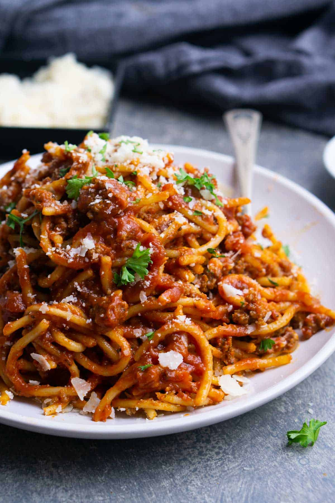

Meat Sauce Pasta Recipe

Here's an easy pressure cooker spaghetti and meat sauce recipe with ground beek, jar pasta sauce, spaghetti noodles and more.
Ingredients
- Olive oil
- Onion
- Garlic
- Ground beef
- Pasta sauce
- Seasonings
- Water
- Spaghetti
Steps
- Use the Instant Pot "Saute" function to saute onions, garlic, ground beef, and seasonings until beef is cooked through. Deglaze the pot by adding a splash of broth and scraping the bottom to release any browned bits.
- Press "Cancel" on the Instant Pot. Break pasta noodles in half and criss-cross in stacks over the beef. Add the water or broth, followed by the pasta sauce. Press the noodles under the liquid to submerge.
- Pressure cook by selecting the "Manual" or "Pressure Cook" button set on HIGH for 2 minutes (for al dente spaghetti) or 3 minutes (for soft spaghetti noodles) followed by 10 minute (NPR) natural pressure release.
- Press "Cancel" and open the lid. It will look unusual at first (see photos below), but trust me, it all works out. Toss everything together to combine. I recommend turning the "keep warm" setting off to prevent overcooking the spaghetti.
- Serve warm with a little Parmesan cheese and fresh parsley.